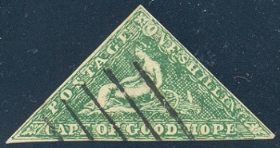
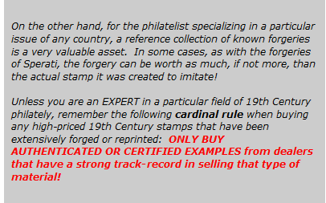

Stamp Forgeries

Stamp forgeries have been around almost as long as postage stamps. The first adhesive postage stamp was issued in May 1840. The first classical forgeries began to show up in the 1860's. The most famous of the forgers were Sperati and Fournier. Their forgeries were of excellent quality, and the forged stamps are sometimes nearly impossible to differentiate from the original government issued postage stamps of the time.
Any time there is a collectible commodity that is in high demand, there are people bent on deceiving collectors with counterfeited products. This goes for ancient artifacts, ancient Asian pottery, autographs, antiques, rare coins, and of course, rare stamps ... anything that can be sold to an unsuspecting buyer, in order to make money.
The Cape of Good Hope 1 Shilling triangle stamp, at the top of this page, is a lithographed stamp forgery. Other stamp forgeries are not so obvious.
Sometimes, the seller might not actually be aware that the stamp he is selling is not authentic. He may have bought it in a collection or from another seller, thinking it was actually real! That is why the online auction buyer must have a high degree of education in what he is collecting. Always pay attention to what you are buying. If I'm buying a classic stamp, I always take the lot image and copy it to my computer. Then I view the image in Windows Picture Viewer, enlarging it to reveal the fine details, before I ever make the decision to bid on it.

But all of us can be deceived, if we're not careful. I used to collect ancient coins. I have sets of The Roman Imperial Coinage, ALL of David Sears' books, and many other references, that I can use. One time I saw two Roman Silver Denarii on eBay that had really cheap starting prices, one of Caligula and one of Claudius. Very rare emperors in silver. I wound up winning both of them for about $250 each ... around 1/10 of their market value. When I received them and tried to attribute them, there was something wrong ... the legends on the two coins, according to my reference books, were only used on the gold Aureii of the time. By the time I realized I had bought two counterfeit coins, the eBay seller was gone, and I was stuck. BE CAREFUL!
If you collect any kind of classical philatelic material, ESPECIALLY IF YOU COLLECT ITALIAN STATES, GERMAN STATES, SWISS CANTONS, OR ANY OTHER EARLY CLASSICS THAT HAVE VERY HIGH PRICES, the following reference book is a MUST HAVE ITEM. (Many of these areas also have specialized books published about them, though many are out-of-print and difficult to obtain.)
One of today's most popular general references on 19th Century stamp forgeries was written by Fernand Serrane (1880-1932), one of the preeminent philatelists of his time. In 1927, he published the first of a two volume work called "Vade-Mecum du spécialiste en timbres-postes d'Europe". The American Philatelic Society ran translated excerpts from the original book, in their journal, over a period of 13 years, and in 1998, they published a compilation of the articles in the book entitled "The Serrane Guide". I bought one, when they were first published, and I have used it constantly, ever since. The book, now out-of-print, is occasionally available through various philatelic literature dealers and on the eBay auction site. It can be very expensive though.
Stamp Forgeries
Page Links
Faked Cancellations
Forgery Terminology
German States
Romagna
USSR
GREAT NEWS!
But ... You need to understand French!
The original 1926-1927 two volume edition (IN FRENCH) of Fernand Serrane's "Vade-Mecum du spécialiste en timbres-postes d'Europe" has been digitized by the National Library of France, however the previously provided link to view and download the two volume book no longer works.
Fortunately, I have downloaded copies of the two PDF files, and they are available here .....
Serrane, F. -- Vade-Mecum -- Vol. I
Serrane, F. -- Vade-Mecum -- Vol. II